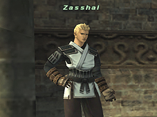

The main objective of Salvage missions is the exploration of the archaeological remains of four newly opened areas (Zhayolm Remnants, Arrapago Remnants, Bhaflau Remnants, Silver Sea Remnants) and the eradication the demonic beasts that rule their deepest depths. However, this will not be as easy as it sounds. A powerful force known only as the Pathos of Alzadaal limits the abilities of all who enter, making them easy prey for the hordes of fiends waiting in the shadows.
To complete these missions, alliances must work as one, or the treasure that slumbers in the remnants’ bowels will remain lost for eternity.

1. Though adventurers must have completed some of the Treasures of Aht Urhgan missions, there are no mercenary rank requirements.
2. Adventurers must be level 65 or above, and be in a party/alliance of between 6 to 18 players.
3. In addition to meeting the aforementioned criteria, adventurers also must possess a “remnants permit.” This key item can be obtained in exchange for Assault points (2000) and will grant entry to any one of the four remnants (free of charge). Please note that a permit can only be used once, and adventurers must wait at least 24 hours (Earth time) before they will be allowed to purchase another.
Unlike Dynamis or Limbus, Salvage uses a battle system similar to Assault, meaning that area reservations are not required.
Also, Salvage mission time limits are all set at 100 minutes, and there are no items or monsters that can extend that limit.
*After entering one of the four areas, you will not be able to leave or move to another area on foot until your alliance’s reservation period has expired. However, you can transport out of the area using magic or temporary items, or by returning to your home point after being KO’d.
When adventurers begin a Salvage mission, they may have as many as 20 different limits hampering their abilities, equipment, attributes, and more. The only way to reach the guardian of the area and retrieve its treasure is to remove these limits.
The different limits are divided into the following 5 categories:
*The encumbrance icon will not disappear until all equip slots have been reopened.
(1) Obliviscence
(2) Debilitation
(3) Encumbrance
The Pathos of Alzadaal can only be neutralized with special potions and medicines known as “imbued items.” Most of these items are pathos-specific and will only cure one ailment. They can be found on monsters roaming throughout the remains.
One of the keys for success in the Salvage missions is determining in which order members of the alliance receive the imbued items.
*Players must dispose of any imbued items they bring back from the remains before they will be allowed to enter again.
Exploration
There are several routes through the various remnants. However, once one route has been chosen, all others become locked. The moment any alliance member uses one of the teleportation devices, all members will be instantly warped to the next area. It is vital that an alliance talks over their plan of attack before delving into the uncharted depths.
Imbued Items
Upon entry to the remnants, all alliance members will be greatly affected by the Pathos of Alzadaal. It is highly recommended that players do their best to find imbued items and remove as many restrictions as possible before moving on to the deeper parts of the dungeon. One way to approach this is by talking over which alliance members should receive which items and when, and decide on a simple lot system to reduce confusion.
Temporary Items
Treasure coffers filled with temporary items are located all about the remnants. These items will play an important role at the beginning of an alliance’s journey when many of its members are hampered by the Pathos of Alzadaal.
*Temporary items cannot be traded, so players must decide beforehand who is to receive them.
*Treasure coffers will not disappear until all the items in it have been taken out.